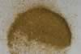

|
DOCUMENTATION_FORMAT: MINERAL
SAMPLE_ID: NG-1.a, NG-1.b
MINERAL_TYPE: Phyllosilicate
MINERAL: Nontronite (Fe-bearing Smectite) (Montmorillonite group)
FORMULA: Na0.33(Fe+3)2(Si,Al)4O10*nH20
FORMULA_HTML: Na0.33Fe+32(Si,Al)4O10•nH2O
COLLECTION_LOCALITY: Holen Hagen, Germany
ORIGINAL_DONOR: Clay Mineral Society
CURRENT_SAMPLE_LOCATION: USGS Denver Spectroscopy Laboratory
ULTIMATE_SAMPLE_LOCATION: USGS Denver Spectroscopy Laboratory
SAMPLE_DESCRIPTION:
A spectrum for this sample was published by:
Clark, R.N., T.V.V. King, M. Klejwa, G. Swayze, and N. Vergo, 1990, High spectral resolution reflectance spectroscopy of minerals: J. Geophys Res. 12653-12680.
who noted that it was spectrally pure.
The spectrum from 2.5-25µm was published in: Salisbury, J. W., Walter, L. W., and Vergo, N., 1987, Mid-Infrared (2.1-25µm) Spectra of Minerals: First Edition, U.S. Geological Survey Open File Report 87-263.
Grain size fractions are indicated by the extension after the sample number:
.a = bulk
.b = less than 2µm
IMAGE_OF_SAMPLE:

END_SAMPLE_DESCRIPTION.
XRD_ANALYSIS:
Analysis by Norma Vergo indicates the sample is nontronite + quartz + other; the less than 2µm cut was nontronite + trace quartz.
END_XRD_ANALYSIS.
COMPOSITIONAL_ANALYSIS_TYPE: XRF # XRF, EPMA, ICP(Trace), WChem
| COMPOSITION KEYWORD |
Oxide ASCII |
Amount | Weight Percent, % |
Oxide html |
|---|---|---|---|---|
| COMPOSITION: | SiO2 | 80.0 | wt% | SiO2 |
| COMPOSITION: | TiO2 | 0.05 | wt% | TiO2 |
| COMPOSITION: | Al2O3 | 2.00 | wt% | Al2O3 |
| COMPOSITION: | Fe2O3 | 11.1 | wt% | Fe2O3 |
| COMPOSITION: | MnO | less than 0.02 | wt% | MnO |
| COMPOSITION: | MgO | 0.42 | wt% | MgO |
| COMPOSITION: | CaO | 0.56 | wt% | CaO |
| COMPOSITION: | Na2O | less than 0.15 | wt% | Na2O |
| COMPOSITION: | K2O | 0.72 | wt% | K2O |
| COMPOSITION: | P2O5 | less than 0.05 | wt% | P2O5 |
| COMPOSITION: | LOI | 5.28 | wt% | LOI |
| COMPOSITION: | Total | 100.35 | wt% | |
| COMPOSITION: | O=Cl,F,S | wt% | #correction for Cl, F, S | |
| COMPOSITION: | New Total | 100.35 | wt% |
COMPOSITION_TRACE:
COMPOSITION_DISCUSSION:
XRF Analysis by Branch of Analytical Chemistry, USGS, Denver.
END_COMPOSITION_DISCUSSION.
MICROSCOPIC_EXAMINATION:
50% quartz
1-2% opaques
no HCl fizz.
END_MICROSCOPIC_EXAMINATION.
SPECTROSCOPIC_DISCUSSION:
END_SPECTROSCOPIC_DISCUSSION.
SPECTRAL_PURITY: 1b2c3d4_ # NG-1.a # 1= 0.2-3, 2= 1.5-6, 3= 6-25, 4= 20-150 microns
SPECTRAL_PURITY: 1b2b3b4_ # NG-1.b <2um # 1= 0.2-3, 2= 1.5-6, 3= 6-25, 4= 20-150 microns
{kind=link}